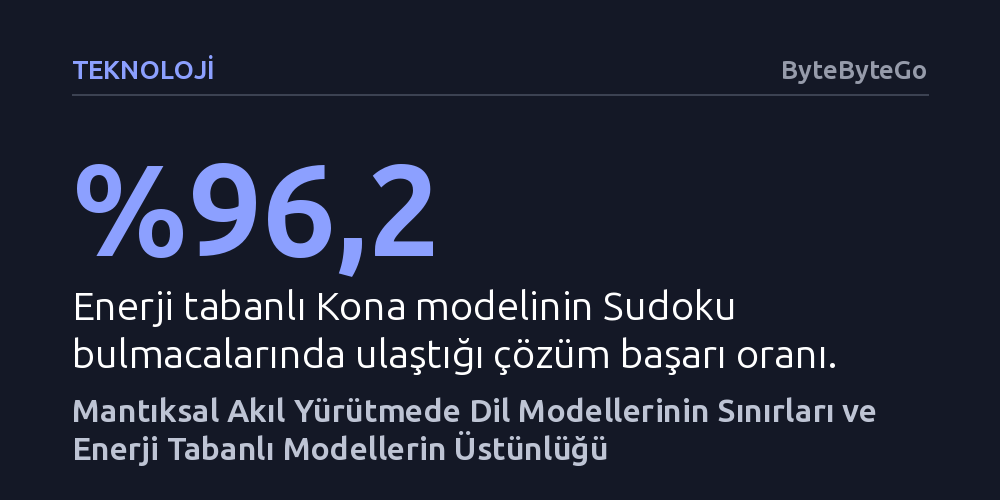

TEKNOLOJI · ByteByteGo · 2026-10-13
Öncü büyük dil modellerinin Sudoku testinde binlerce dolar harcayarak yüzde 2 başarıda kaldığı yerde, enerji tabanlı Kona modeli aynı kısıt problemini 4 dolara yüzde 96,2 doğrulukla çözdü. Sonuçlar, mantıksal akıl yürütmede dil üretiminin değil, gizil uzaydaki enerji optimizasyonunun üstün olduğunu gösteriyor.
Yapay zekanın geleceğinin sadece daha büyük dil modelleri geliştirmekten değil, dili düşüncenin kendisi değil arayüzü kabul eden kural odaklı matematiksel mimarilerden geçtiğini gösterir.

Yılın başında gerçekleştirilen dikkat çekici bir Sudoku deneyi, yapay zeka dünyasında yaygın kabul gören bir varsayımı kökünden sarstı. OpenAI'ın GPT-5.2'si, Anthropic'in Claude Opus 4.5'i ve Google'ın Gemini 3 Pro'su gibi sektörün en gelişmiş büyük dil modelleri, kuralları on yaşındaki bir çocuğun bile kısa sürede kavrayabileceği Sudoku bulmacalarında topluca yalnızca yüzde 2'lik bir başarı oranı yakalayabildi. Bu başarısız denemeler sırasında tüketilen toplam API maliyeti ise yaklaşık 11.000 doları buldu; test edilen en yetkin dil modelinin başarı oranı bile yüzde 6,9'da kaldı.
Aynı deneyde Logical Intelligence tarafından geliştirilen ve bu devasa dil modellerinden yaklaşık bin kat daha küçük olan Kona adlı model ise bambaşka bir tablo ortaya koydu. Kona, bulmacaların yüzde 96,2'sini hatasız çözerken işlemci maliyeti yalnızca 4 dolarda kaldı. Üstelik bir dil modelinin tek bir bulmacayı çözmek için 90 saniyeye kadar süren hesaplamalar yaptığı ortamda, Kona ortalama 313 milisaniyede nihai sonuca ulaştı.
Ortaya çıkan bu devasa uçurum, basit bir zeka oyununun ötesinde, yapay zekanın nereye doğru evrilmesi gerektiğine dair temel bir soruyu gündeme getiriyor. İnsan zekasının ve gündelik hayatımızdaki problemlerin büyük bir kısmı dille ifade edilen kavramlardan ibaret değil; uzamsal akıl yürütme, çok değişkenli planlama ve mantıksal kuralların aynı anda sağlanması gibi yetenekler gerektiriyor.
Büyük dil modellerinin Sudoku gibi kural tabanlı kısıt problemlerinde tökezlemesinin ardında iki temel mimari engel yatıyor. İlk sorun, bu modellerin metinleri soldan sağa, yani birbiri ardına sıralanan tek yönlü jetonlar halinde üretmesidir. Bir ızgarayı satır satır dolduran model, ikinci satıra yerleştirdiği bir sayının yedinci satırdaki sütun kuralıyla çeliştiğini ancak o satıra ulaştığında fark edebilir. Hatayı fark ettiğinde ise önceki adımlara geri dönüp düzeltme yapamaz; hatanın yapıldığı noktadan itibaren her şeyi baştan üretmek zorunda kalır ve bu durum hesaplama maliyetini sürdürülemez hale getirir.
İkinci engel ise dil modellerinin çıktılarının ayrık birimlerden oluşmasıdır. Bir hücreye yerleştirilen rakam ya bütünüyle doğrudur ya da yanlıştır; cevabı adım adım doğruya yaklaştıracak kesintisiz bir ara zemin yoktur. Model ya rakamı çöpe atıp yeniden denemek ya da yanlış yolda ilerlemek zorunda kalır. Oysa satranç, Go, çip tasarımı, elektrik şebekesi yönetimi veya finansal işlemler gibi kısıt sağlama problemleri, her seçimin diğer tüm seçimleri doğrudan etkilediği bütüncül bir mantık gerektirir.
İnsan beyninin işleyişi de bu ayrık dil yapısından oldukça farklıdır. Şu anda bu satırları okurken aynı anda arka odadaki bir gürültüyü fark edebilir, birazdan kahve yapmaya karar verebilir ve oturuşunuzu düzeltebilirsiniz. Bunların hiçbiri zihninizde kelimelere dökülmeden eyleme dönüşür. Logical Intelligence kurucusu Eve Bodnia'nın ifade ettiği gibi dil, düşüncenin kendisi değil; beyinler arasında iletişimi sağlayan bir kullanıcı arayüzüdür.
Dili bir amaç değil arayüz olarak kabul eden yaklaşım, akıl yürütmeyi gizil uzayda çalışan enerji tabanlı modellere (EBM) emanet ediyor. Kelime kelime üretim yapan üretici modellerin aksine, enerji tabanlı bir model doğrudan çıktı üretmez; bunun yerine verilen bir problem ile önerilen çözüm adayını birlikte değerlendiren matematiksel bir enerji fonksiyonu tanımlar. Düşük enerji çözümün problem kurallarıyla tam uyumunu gösterirken, yüksek enerji kural ihlallerini simgeler. Böylece olası tüm çözümler üzerinde engebeli bir topoğrafya oluşur; doğru cevaplar derin vadi tabanlarında, yanlışlar ise tepelerde toplanır.
Bu modellerin eğitimi, doğru cevaplarla yanlış cevapları kıyaslayan tezat kayıp fonksiyonlarıyla yürütülür. Doğru cevapların enerjisi vadilerin en dibine bastırılırken, yanlış cevapların enerjisi yukarı itilir. Kona, hiçbir pekiştirmeli öğrenme kullanılmadan ve yalnızca yarısı doldurulmuş eksik Sudoku tahtaları gösterilerek eğitilmiş, buna rağmen oyunun tüm kurallarını kendi kendine öğrenmeyi başarmıştır. Çözüm anında ise rastgele bir sayısal gürültüyle başlanır ve sürekli gradyan inişi adımlarıyla vadi tabanına inilerek en düşük enerjili doğru sonuca milisaniyeler içinde ulaşılır.
Akıl yürütme süreci tek bir nihai cevaba indirgenemediğinde, model tüm ara düşünce adımlarını gizil uzaydaki vektör dizileri olarak değerlendirir. Zihnimizde bir planı evirip çevirirken çelişkileri adım adım giderip sonucu ancak en sonunda kelimelere dökmemiz gibi, model de tüm aşamaları aynı anda optimize eder. Sürekli sayısal değerler kullanıldığı için her adımda sonuca biraz daha yaklaşılır ve arama tamamlandığında küçük bir kod çözücü nihai cevabı anlaşılır bir formata çevirir.
Enerji tabanlı akıl yürütmenin en belirleyici üstünlüklerinden biri de doğrulama ve güvenlik aşamasında ortaya çıkıyor. Dil modellerinin ürettiği serbest metinlerin nesnel bir doğruluk sınavı yoktur; sonradan eklenen denetleme katmanları ise üretimi daha da yavaşlatır. Oysa Sudoku'da, moleküler kimyada veya finansal dengelerde kurallar kesin ve matematikseldir. Kona gibi sistemler iki aşamalı çalışır: İlk aşamada enerji gradyanı çözümü hızla doğru vadisine çeker; ikinci aşamada ise Lean 4 gibi biçimsel kanıt denetleyicileri veya kural algoritmaları cevabı anında onaylar ya da reddeder.
Yapay zekanın geleceği, her işi tek başına yapmaya çalışan devasa genel modeller yerine uzmanlaşmış sistemlerin iş bölümüne işaret ediyor. Kesin kural ve matematiksel doğrulama gerektiren görevleri enerji tabanlı akıl yürütme modelleri üstlenirken; dili, sezgiyi ve kullanıcı iletişimini büyük dil modelleri yürütecektir. Mantık ile dilin ayrılması, iki mimarinin de en güçlü olduğu alanda parlamasını sağlar.
Bu yaklaşım sektörün donanım ve iş modellerini de kökten değiştirebilir. Yüz milyonlarca parametrelik küçük enerji modelleri pahalı GPU kümelerine ihtiyaç duymadan çalışabilir ve iki mühendisin bir haftalık çalışmasıyla özelleştirilebilir. Yapay zekanın metreyle ölçülen bir bulut hizmeti olmaktan çıkıp her kuruma özel küçük, doğrulanabilir ve ekonomik sistemler haline gelmesi, endüstride kartların yeniden dağıtılmasına yol açacaktır.